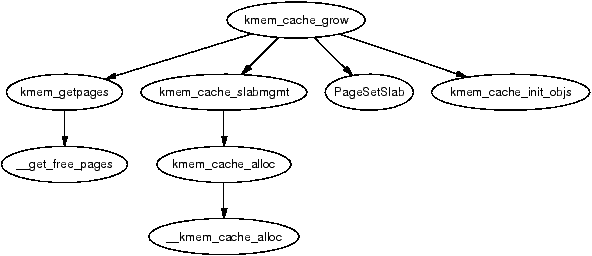
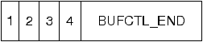
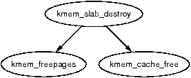
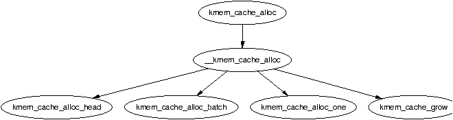
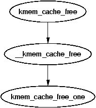
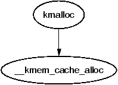
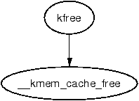

本章描述通用分配器。它是一个 slab 分配器，在许多方面与 Solaris 中使用的通用内核分配器十分相似 [MM01]。Linux 的实现主要基于 Bonwick 关于 slab 分配器的第一篇论文 [Bon94]，并加入了许多与他后续论文 [BA01] 中所描述思想非常接近的改进。我们先对该分配器做一个简要概览，随后描述其使用的各种结构体，最后再深入介绍它所负责的每项任务。
slab 分配器的基本思想是：让内核常用对象保持一份已初始化好的缓存，随时可用。如果没有这种基于对象的分配器，内核就会花费大量时间反复地分配、初始化和释放同一种对象。slab 分配器的目标是缓存被释放的对象，使其基本结构在多次使用之间得以保留 [Bon94]。
slab 分配器由若干个数量可变的缓存组成，这些缓存通过一个名为缓存链（cache chain）的双向循环链表连接起来。在 slab 分配器的语境中，一个缓存（cache）是某种特定类型对象（如 mm_struct 或 fs_cache）的管理器，由 struct kmem_cache_s 管理（稍后详细讨论）。各个缓存通过缓存结构体中的 next 字段相互链接。
每个缓存维护若干块物理上连续的内存页，称为 slab，这些 slab 被切分成小块用于存放该缓存所管理的数据结构和对象。这些不同结构之间的关系如图 8.1 所示。
slab 分配器有三个主要目标：
为了减少二进制伙伴分配器通常会造成的内部碎片，slab 分配器维护了两组小内存缓冲区缓存，大小范围从 25（32）字节到 217（131072）字节。其中一组适用于 DMA 设备。这些缓存被称为 size-N 和 size-N(DMA)，其中 N 为分配的字节数。kmalloc()（见第 8.4.1 节）函数用于从中分配内存。这样一来，底层页面分配器最大的不足之处也就得到了解决。各 sizes 缓存将在 第 8.4 节中进一步讨论。
slab 分配器的第二项任务是维护常用对象的缓存。对内核中很多结构体而言，初始化一个对象所需的时间与为它分配空间的时间相当，甚至更长。当新的 slab 被创建时，会在其中打包若干对象，如果提供了构造函数还会使用构造函数对其进行初始化。当对象被释放时，它保持已初始化的状态，以便下次分配能够更快。
slab 分配器的第三项任务是改善硬件缓存利用率。如果对象在 slab 中打包后还有剩余空间，剩余部分会被用于对 slab 进行着色（color）。Slab 着色是一种让不同 slab 中的对象使用 CPU 缓存中不同行的方案。通过让对象在 slab 内以不同的起始偏移开始，能够使来自不同 slab 的对象落入 CPU 缓存的不同行，从而减少同一 slab 缓存中的对象在 CPU 缓存中相互冲刷的可能性。借助这种方案，本来会被浪费掉的空间被赋予了新的用途。图 8.2 展示了从伙伴分配器获得的一个页面如何使用着色来将其上存储的对象对齐到 L1 CPU 缓存。
Linux 并不像 [Kes91] 那样根据物理地址对页面分配进行着色，也不像 [GAV95] 对数据段或 [HK97] 对代码段所描述的那样对对象放置顺序进行调整，但这种方案确实有助于提高缓存行的利用率。缓存着色（cache colouring）在第 8.1.5 节中会进一步讨论。在 SMP 系统上，为了进一步提高缓存利用率，每个缓存还为每个 CPU 保留了一个小的对象数组，这一点将在第 8.5 节中讨论。
如果在编译时设置了 CONFIG_SLAB_DEBUG 选项，slab 分配器还提供 slab 调试功能。提供了两种调试特性，分别称为红区（red zoning）和对象毒化（object poisoning）。启用红区时，会在对象的两端各放置一个标记。如果该标记被破坏，分配器就能据此判断哪个对象发生了缓冲区溢出并报告之。对对象进行毒化是指，在 slab 创建时以及对象被释放后，用一个预定义位模式（在 mm/slab.c 中定义为 0x5A）填充对象。在分配对象时会检查该模式，若发生改变，分配器就能据此判断该对象在被分配之前已被使用过，并将其标记出来。
该分配器对外公开的 API 虽小但功能强大，列于表 8.1。
| kmem_cache_t * kmem_cache_create(const char *name, size_t size, size_t offset, unsigned long flags, void (*ctor)(void*, kmem_cache_t *, unsigned long), void (*dtor)(void*, kmem_cache_t *, unsigned long)) |
| 创建一个新缓存并将其加入缓存链 |
| int kmem_cache_reap(int gfp_mask) |
| 最多扫描 REAP_SCANLEN 个缓存，并从中选择一个收割（reap）：释放其所有 per-CPU 对象和空闲 slab。在内存紧张时调用 |
| int kmem_cache_shrink(kmem_cache_t *cachep) |
| 删除某缓存中所有 per-CPU 对象，并删除 slabs_free 链表中的所有 slab。返回被释放的页面数 |
| void * kmem_cache_alloc(kmem_cache_t *cachep, int flags) |
| 从缓存中分配一个对象并返回给调用者 |
| void kmem_cache_free(kmem_cache_t *cachep, void *objp) |
| 释放一个对象并将其归还给缓存 |
| void * kmalloc(size_t size, int flags) |
| 从某个 sizes 缓存中分配一块内存 |
| void kfree(const void *objp) |
| 释放由 kmalloc 分配的一块内存 |
| int kmem_cache_destroy(kmem_cache_t * cachep) |
| 销毁所有 slab 中的所有对象，释放与之关联的所有内存，然后将缓存从链中移除 |
每种需要被缓存的对象类型对应一个缓存。要查看运行中系统上所有可用缓存的完整列表，可以执行 cat /proc/slabinfo。该文件给出了缓存的一些基本信息。该文件输出的一段摘录如下：
slabinfo - version: 1.1 (SMP) kmem_cache 80 80 248 5 5 1 : 252 126 urb_priv 0 0 64 0 0 1 : 252 126 tcp_bind_bucket 15 226 32 2 2 1 : 252 126 inode_cache 5714 5992 512 856 856 1 : 124 62 dentry_cache 5160 5160 128 172 172 1 : 252 126 mm_struct 240 240 160 10 10 1 : 252 126 vm_area_struct 3911 4480 96 112 112 1 : 252 126 size-64(DMA) 0 0 64 0 0 1 : 252 126 size-64 432 1357 64 23 23 1 : 252 126 size-32(DMA) 17 113 32 1 1 1 : 252 126 size-32 850 2712 32 24 24 1 : 252 126
其中每一列都对应 struct kmem_cache_s 结构体中的一个字段。上述摘录中各列的含义如下：
如示例中那样启用了 SMP 时，冒号后还会再多两列，对应于第 8.5 节中描述的 per-CPU 缓存，分别是：
为加速对象与 slab 的分配和释放，它们被组织在三个链表中：slabs_full、slabs_partial 和 slabs_free。slabs_full 中所有对象都已被分配；slabs_partial 中有空闲对象，因此是分配对象的首选；slabs_free 中没有已分配的对象，因此是销毁 slab 的首选。
描述缓存的所有信息存储在 mm/slab.c 中声明的 struct kmem_cache_s 中。该结构体非常大，因此将分段介绍。
190 struct kmem_cache_s {
193 struct list_head slabs_full;
194 struct list_head slabs_partial;
195 struct list_head slabs_free;
196 unsigned int objsize;
197 unsigned int flags;
198 unsigned int num;
199 spinlock_t spinlock;
200 #ifdef CONFIG_SMP
201 unsigned int batchcount;
202 #endif
203
这一部分字段大多与对象分配和释放相关。
206 unsigned int gfporder; 209 unsigned int gfpflags; 210 211 size_t colour; 212 unsigned int colour_off; 213 unsigned int colour_next; 214 kmem_cache_t *slabp_cache; 215 unsigned int growing; 216 unsigned int dflags; 217 219 void (*ctor)(void *, kmem_cache_t *, unsigned long); 222 void (*dtor)(void *, kmem_cache_t *, unsigned long); 223 224 unsigned long failures; 225
这一部分字段主要与从缓存分配或释放 slab 相关。
227 char name[CACHE_NAMELEN]; 228 struct list_head next;
这些字段在缓存创建时被设置。
229 #ifdef CONFIG_SMP 231 cpucache_t *cpudata[NR_CPUS]; 232 #endif
233 #if STATS 234 unsigned long num_active; 235 unsigned long num_allocations; 236 unsigned long high_mark; 237 unsigned long grown; 238 unsigned long reaped; 239 unsigned long errors; 240 #ifdef CONFIG_SMP 241 atomic_t allochit; 242 atomic_t allocmiss; 243 atomic_t freehit; 244 atomic_t freemiss; 245 #endif 246 #endif 247 };
这些数据仅在编译时设置了 CONFIG_SLAB_DEBUG 选项时才可用。它们都只是计数器，并无一般意义上的用途。/proc/slabinfo 中的统计信息是由其他进程读取该 proc 项时通过遍历每个缓存使用的每个 slab 来计算得到的，并不依赖这些字段。
一些标志在缓存创建时被设置，并在缓存的整个生命周期内保持不变。它们影响 slab 的结构以及对象在其中的存放方式。所有标志都以位掩码形式存储在缓存描述符的 flags 字段中。完整的可用标志列表声明在 <linux/slab.h> 中。
主要分为三组。第一组是内部标志，仅由 slab 分配器自身设置，列于表 8.2。这组中唯一相关的标志是 CFGS_OFF_SLAB，它决定 slab 描述符存放的位置。
| 标志 | 说明 |
|---|---|
| CFGS_OFF_SLAB | 表示该缓存的 slab 管理器存放在 slab 之外（off-slab），参见第 8.2.1 节 |
| CFLGS_OPTIMIZE | 该标志被设置但从未被使用 |
第二组由缓存创建者设置，决定分配器如何对待 slab 以及如何存放对象。列于表 8.3。
| 标志 | 说明 |
|---|---|
| SLAB_HWCACHE_ALIGN | 将对象按 L1 CPU 缓存对齐 |
| SLAB_MUST_HWCACHE_ALIGN | 即使非常浪费空间或启用了 slab 调试，仍强制按 L1 CPU 缓存对齐 |
| SLAB_NO_REAP | 从不收割该缓存中的 slab |
| SLAB_CACHE_DMA | 使用 ZONE_DMA 中的内存分配 slab |
最后一组只在编译选项 CONFIG_SLAB_DEBUG 被设置时才可用。它们决定对 slab 和对象进行哪些额外检查，主要在开发新缓存时才有意义。
| 标志 | 说明 |
|---|---|
| SLAB_DEBUG_FREE | 在释放时执行代价较高的检查 |
| SLAB_DEBUG_INITIAL | 在释放时调用构造函数作为验证器，确保对象仍处于正确的已初始化状态 |
| SLAB_RED_ZONE | 在对象两端放置标记，以捕获溢出 |
| SLAB_POISON | 使用已知模式毒化对象，以捕获对未分配或未初始化对象的修改 |
为防止调用者使用错误的标志，mm/slab.c 中定义了一个 CREATE_MASK，由所有允许使用的标志组成。在创建缓存时，会把请求的标志与 CREATE_MASK 比较，若使用了非法标志则报告为 bug。
dflags 字段只有一个标志 DFLGS_GROWN，但很重要。该标志在 kmem_cache_grow() 中被设置，目的是让 kmem_cache_reap() 不太会选中该缓存进行收割。当 kmem_cache_reap() 发现某缓存设置了该标志时，会跳过该缓存并清除该标志。
这些标志与用于为 slab 分配页面的 GFP 页标志相对应。调用者有时会使用 SLAB_* 标志，有时也会使用 GFP_* 标志，但其实应只使用 SLAB_*。它们直接对应于第 6.4 节中描述的标志，此处不再赘述。这些标志的存在大概是为了使代码意图更清晰，并便于 slab 分配器在需要时对特定标志做出不同响应；但实际上目前并无差异。
| 标志 | 说明 |
|---|---|
| SLAB_ATOMIC | 等价于 GFP_ATOMIC |
| SLAB_DMA | 等价于 GFP_DMA |
| SLAB_KERNEL | 等价于 GFP_KERNEL |
| SLAB_NFS | 等价于 GFP_NFS |
| SLAB_NOFS | 等价于 GFP_NOFS |
| SLAB_NOHIGHIO | 等价于 GFP_NOHIGHIO |
| SLAB_NOIO | 等价于 GFP_NOIO |
| SLAB_USER | 等价于 GFP_USER |
另外还有少量可以传给构造函数和析构函数的标志，列于表 8.6。
| 标志 | 说明 |
|---|---|
| SLAB_CTOR_CONSTRUCTOR | 对于将同一个函数同时用作构造函数和析构函数的缓存，当该函数作为构造函数被调用时置此标志 |
| SLAB_CTOR_ATOMIC | 表示构造函数不能睡眠 |
| SLAB_CTOR_VERIFY | 表示构造函数只需验证对象是否被正确初始化 |
为了更好地利用硬件缓存，slab 分配器会根据 slab 中剩余空间的多少，将不同 slab 中的对象偏移不同的字节数。偏移以 BYTES_PER_WORD 为单位；当设置了 SLAB_HWCACHE_ALIGN 时，则以 L1_CACHE_BYTES 为单位，以对齐到 L1 硬件缓存。
在缓存创建过程中，会计算每个 slab 可以容纳多少个对象（见第 8.2.7 节），以及会浪费多少字节。根据浪费量，会为缓存描述符计算出两个值：
对象被偏移之后，会使用关联硬件缓存中的不同缓存行，因此来自不同 slab 的对象在内存中相互覆盖的可能性变小。
最好通过一个例子来理解。假设为方便起见，slab 的 s_mem（即第一个对象的地址）为 0，slab 中浪费了 100 字节，且按 32 字节对齐到 Pentium II 的 L1 硬件缓存。
在此情景下，创建的第一个 slab 的对象从 0 开始，第二个从 32 开始，第三个从 64 开始，第四个从 96 开始，第五个则又从 0 开始。这样一来，来自各 slab 的对象不会命中 CPU 上的同一硬件缓存行。colour 的值为 3，colour_off 的值为 32。
kmem_cache_create() 函数负责创建新缓存并将其加入缓存链。创建缓存所需要完成的任务包括：
图 8.3 给出了创建缓存相关的调用关系图；每个函数的详细说明请参阅源码注释。
当一个 slab 被释放时，它会被放到 slabs_free 链表上以备将来使用。缓存不会自动收缩，因此当 kswapd 注意到内存紧张时，会调用 kmem_cache_reap() 来释放一些内存。该函数负责选择一个需要收缩内存占用的缓存。值得注意的是，缓存收割并不考虑哪个内存节点或哪个区（zone）正承受压力。这意味着在 NUMA 或包含高端内存的机器上，内核可能会花费大量时间去释放并不存在内存压力区域的内存；但对于像 x86 这样只有一个内存区段的架构来说，这并不是问题。
图 8.4 中的调用关系图看似简单，但选择合适缓存进行收割的过程其实相当冗长。当系统中存在大量缓存时，每次调用最多只检查 REAP_SCANLEN（当前定义为 10）个缓存。上次扫描到的最后一个缓存存储在 clock_searchp 中，以避免反复检查同样的缓存。对于每个被扫描到的缓存，收割器会执行如下操作：
当一个缓存被选中进行收缩时，所采取的步骤简单而粗暴：
Linux 一点都不含蓄。
有两个名字非常相近、容易混淆的收缩函数。kmem_cache_shrink() 删除 slabs_free 中所有 slab，并返回因此释放的页面数。这是给 slab 分配器使用者使用的主要导出函数。
另一个函数 __kmem_cache_shrink() 也会释放 slabs_free 中所有 slab，然后验证 slabs_partial 和 slabs_full 为空。这是仅供内部使用的函数，在销毁缓存时尤为重要：此时关心的不是释放了多少页面，而是缓存是否已经为空。
当一个模块被卸载时，它负责通过 kmem_cache_destroy() 销毁其所创建的缓存。正确销毁缓存非常重要，因为不允许存在两个同名（可读名称相同）的缓存。核心内核代码通常不操心销毁其缓存，因为这些缓存的生命周期与系统相同。销毁缓存所采取的步骤为：
本节描述 slab 的结构和管理方式。描述 slab 的结构体比缓存描述符要简单得多，但 slab 的内部布局则要复杂得多。其定义如下：
typedef struct slab_s {
struct list_head list;
unsigned long colouroff;
void *s_mem;
unsigned int inuse;
kmem_bufctl_t free;
} slab_t;
该结构体中各字段的含义如下：
读者会注意到：给定一个 slab 管理器或其中的某个对象，似乎并没有显而易见的办法来判断它们属于哪个 slab 或哪个缓存。这一问题通过使用 struct page 中的 list 字段来解决。SET_PAGE_CACHE() 和 SET_PAGE_SLAB() 使用 page→list 的 next 和 prev 字段来记录对象所属的缓存和 slab。要从 page 中取出对应的描述符，可以使用宏 GET_PAGE_CACHE() 和 GET_PAGE_SLAB()。这一关系如图 8.8 所示。
最后一个问题是 slab 管理结构体存放在哪里。slab 管理器既可以放在 slab 内（CFLGS_OFF_SLAB 未在静态标志中设置），也可以放在 slab 外。放置位置由缓存创建时对象的大小决定。值得注意的是，图 8.8 中 struct slab_t 实际上可以存放在页帧的开头，尽管图中看上去 struct slab_ 与页帧是分开的。
如果对象大小超过某个阈值（在 x86 上为 512 字节），则会在缓存标志中设置 CFGS_OFF_SLAB，slab 描述符被存放在某个 sizes 缓存（参见第 8.4 节）中。选中的 sizes 缓存足以容纳 struct slab_t，kmem_cache_slabmgmt() 会按需从中分配。这会限制 slab 上可存放的对象数，因为留给 bufctl 的空间有限；但这并不重要，因为这种情况下对象较大，单个 slab 中本来也不会有太多对象。
另一种情况是，slab 管理器保留在 slab 起始处。当存放在 slab 内时，slab 起始处保留有足够的空间，同时存放 slab_t 和 kmem_bufctl_t——后者是一个无符号整型数组。该数组用于跟踪下一个可用对象的索引，详见第 8.2.3 节。实际对象存放在 kmem_bufctl_t 数组之后。
图 8.9 有助于理解描述符放在 slab 内的 slab 形态，而图 8.10 则展示了当描述符放在 slab 之外时，缓存如何借助 sizes 缓存来存放 slab 描述符。

至此我们已经看到了缓存是如何创建的；不过创建之时，缓存是空的：slab_full、slab_partial、slabs_free 三个链表都为空。新的 slab 通过调用 kmem_cache_grow() 加入缓存。这一过程常被称为“缓存增长（cache growing）”，发生在 slabs_partial 中没有可用对象、slabs_free 中也没有 slab 的情况下。它执行的任务包括：
slab 分配器必须有一种快速而简单的方式来跟踪部分填充的 slab 上空闲对象的位置。它通过为每个 slab 管理器关联一个名为 kmem_bufctl_t 的无符号整型数组来实现这一点——显然，由 slab 管理器自己来记住其空闲对象所在的位置。
从历史上看，根据描述 slab 分配器的论文 [Bon94]，kmem_bufctl_t 原本是一个对象链表。在 Linux 2.2.x 中，该结构体是一个三选一的联合体：指向下一个空闲对象的指针、指向 slab 管理器的指针，或指向对象本身的指针，具体使用哪个取决于对象的状态。
今天，对象所属的 slab 与缓存是通过 struct page 来确定的，kmem_bufctl_t 仅仅是一个对象索引的整数数组。该数组的元素数与 slab 上对象数相同。
141 typedef unsigned int kmem_bufctl_t;
该数组紧跟在 slab 描述符之后，并没有直接的指针指向其首元素，因此提供了一个辅助宏 slab_bufctl()。
163 #define slab_bufctl(slabp) \ 164 ((kmem_bufctl_t *)(((slab_t*)slabp)+1))
这个看似晦涩的宏拆开来看其实很简单。参数 slabp 是指向 slab 管理器的指针。表达式 ((slab_t*)slabp)+1 把 slabp 视为 slab_t 类型并加 1，得到的指针正好指向 kmem_bufctl_t 数组的开头。(kmem_bufctl_t *) 将其转换为所需的类型。因此 slab_bufctl(slabp)[i] 的含义就是：“取 slab 描述符的指针，用 slab_bufctl() 偏移到 kmem_bufctl_t 数组的开头，然后返回数组的第 i 个元素。”
slab 中下一个空闲对象的索引存放在 slab_t→free 中，从而无需用链表来跟踪空闲对象。在分配或释放对象时，会根据 kmem_bufctl_t 数组中的信息更新该指针。
当一个缓存增长时，slab 上的所有对象和 kmem_bufctl_t 数组都会被初始化。数组用每个对象的索引填充，从 1 开始，以标记 BUFCTL_END 结束。对于含有 5 个对象的 slab，数组各元素如图 8.12 所示。

值 0 被存放在 slab_t→free 中，因为第 0 个对象将是第一个被分配的空闲对象。其思想是：对于给定的对象 n，下一个空闲对象的索引存放在 kmem_bufctl_t[n] 中。在上图中，0 之后的下一个空闲对象是 1；1 之后是 2，以此类推。在使用过程中，这种排列方式使得该数组充当了一个空闲对象的 LIFO 栈。
在分配对象时，kmem_cache_alloc() 通过调用 kmem_cache_alloc_one_tail() 来完成更新 kmem_bufctl_t 数组的“实际”工作。slab_t→free 字段保存了第一个空闲对象的索引；下一个空闲对象的索引存放在 kmem_bufctl_t[slab_t→free] 处。对应代码如下：
1253 objp = slabp->s_mem + slabp->free*cachep->objsize; 1254 slabp->free=slab_bufctl(slabp)[slabp->free];
slabp→s_mem 是指向 slab 中第一个对象的指针；slabp→free 是要分配的对象的索引，因此需要乘以对象大小。
下一个空闲对象的索引保存在 kmem_bufctl_t[slabp→free] 处。由于没有指向该数组的直接指针，因此使用辅助宏 slab_bufctl()。注意 kmem_bufctl_t 数组在分配过程中并不会被修改，只是那些已分配出去的对应元素不再可达。例如，在两次分配之后，kmem_bufctl_t 数组中索引 0 和 1 的元素就不再被其他元素指向了。
kmem_bufctl_t 链表只在 kmem_cache_free_one() 中释放对象时才会更新。代码如下：
1451 unsigned int objnr = (objp-slabp->s_mem)/cachep->objsize; 1452 1453 slab_bufctl(slabp)[objnr] = slabp->free; 1454 slabp->free = objnr;
指针 objp 指向即将被释放的对象，objnr 是它的索引。kmem_bufctl_t[objnr] 被更新为 slabp→free 的当前值，从而把原先由 free 指向的对象挂到这条“伪链表”上。slabp→free 则被更新为正在释放的对象，使其成为下次分配的对象。
在缓存创建期间，会调用 kmem_cache_estimate() 来计算一个 slab 可以存放多少对象，并将 slab 描述符是放在 slab 内还是 slab 外、以及用于标记对象是否空闲的 kmem_bufctl_t 大小都纳入考虑。它返回可存放的对象数和被浪费的字节数。如果要使用缓存着色，被浪费的字节数就很重要。
计算非常基础，步骤如下：
当缓存被收缩或销毁时，slab 将被删除。由于对象可能有析构函数，必须先调用它们，因此该函数的任务是：
图 8.13 所示的调用关系图非常简单。

本节介绍对象是如何管理的。到这一步，真正繁重的工作大多已经由缓存管理器或 slab 管理器完成了。
slab 创建时，其中所有对象都被置于初始化状态。如果存在构造函数，则对每个对象调用一次；并且约定对象在释放后仍保持初始化状态。从概念上看初始化非常简单：遍历所有对象，调用构造函数并初始化它们的 kmem_bufctl。kmem_cache_init_objs() 函数负责对象的初始化。
kmem_cache_alloc() 负责向调用者分配一个对象，它在 UP 和 SMP 情况下的行为略有不同。图 8.14 展示了 SMP 情形下对象分配的基本调用关系图。

基本步骤有四个。第一步（kmem_cache_alloc_head()）做基本检查，确保分配请求合法。第二步是选择从哪个 slab 链表分配——slabs_partial 或 slabs_free。如果 slabs_free 中没有 slab，则会增长缓存（见第 8.2.2 节）以在 slabs_free 中创建新 slab。最后一步是从所选 slab 中分配对象。
SMP 情形还多一步：在分配对象之前，会先检查 per-CPU 缓存中是否有可用对象，若有则使用之；若无，则一次性批量分配 batchcount 个对象放入 per-CPU 缓存中。关于 per-CPU 缓存的更多信息见第 8.5 节。
kmem_cache_free() 用于释放对象，其任务相对简单。与 kmem_cache_alloc() 一样，它在 UP 和 SMP 情况下行为不同。两者的主要区别在于：UP 情形下对象直接归还给 slab；SMP 情形下对象归还给 per-CPU 缓存。在两种情况下，若对象有析构函数都会被调用。析构函数负责将对象恢复为初始化状态。

Linux 为小块内存分配（物理页面分配器不适合处理的那种）维护两组缓存。一组用于 DMA，另一组用于普通用途。它们的可读名称分别为 size-N cache 和 size-N(DMA) cache，可通过 /proc/slabinfo 查看。每个 sized 缓存的信息存储在 struct cache_sizes 中（通过 typedef 重命名为 cache_sizes_t），定义于 mm/slab.c：
331 typedef struct cache_sizes {
332 size_t cs_size;
333 kmem_cache_t *cs_cachep;
334 kmem_cache_t *cs_dmacachep;
335 } cache_sizes_t;
该结构体中的字段如下：
由于此类缓存数量有限，因此在编译时初始化了一个名为 cache_sizes 的静态数组，在 4KiB 页大小的机器上从 32 字节开始，在更大页大小的机器上从 64 字节开始。
337 static cache_sizes_t cache_sizes[] = {
338 #if PAGE_SIZE == 4096
339 { 32, NULL, NULL},
340 #endif
341 { 64, NULL, NULL},
342 { 128, NULL, NULL},
343 { 256, NULL, NULL},
344 { 512, NULL, NULL},
345 { 1024, NULL, NULL},
346 { 2048, NULL, NULL},
347 { 4096, NULL, NULL},
348 { 8192, NULL, NULL},
349 { 16384, NULL, NULL},
350 { 32768, NULL, NULL},
351 { 65536, NULL, NULL},
352 {131072, NULL, NULL},
353 { 0, NULL, NULL}
显然，这是一个以零结尾的静态数组，由 2 的连续幂次构成的缓冲区组成，范围从 25 到 217。如此就有了描述各 sized 缓存的数组，系统启动时必须为其初始化相应的缓存。
有了 sizes 缓存，slab 分配器就可以提供一个新的分配器函数 kmalloc()，用于需要小内存缓冲区的场合。当请求到达时，会选择合适的 sizes 缓存并从中分配一个对象。因此图 8.16 中的调用关系图非常简单，因为真正繁重的工作都在缓存分配中完成。

与有 kmalloc() 用于分配小对象相对应，存在 kfree() 用于释放这些对象。与 kmalloc() 类似，真正的工作发生在对象释放阶段（见第 8.3.3 节），因此图 8.17 中的调用关系图也非常简单。

slab 分配器致力于的任务之一是提高硬件缓存的利用率。高性能计算的一个普遍目标 [CS98] 是让数据在同一 CPU 上尽可能长时间地停留。Linux 通过为系统中每个 CPU 维护一个 per-CPU 对象缓存（简称 cpucache）来实现这一点。
在分配或释放对象时，对象会放入 cpucache。当池中没有空闲对象时，会一次性放入一批对象。当池过大时，其中一半会被取出放入全局缓存。这样一来，同一个 CPU 的硬件缓存就能尽可能长时间地被复用。
这种方法的第二大好处是访问 CPU 池时无需持有自旋锁，因为其他 CPU 不会访问本地数据。这一点很重要，因为如果没有 cpucache，每次分配和释放都得获取自旋锁，开销是不必要的。
每个缓存描述符都有一个指向 cpucache 数组的指针：
231 cpucache_t *cpudata[NR_CPUS];
该结构体非常简单：
173 typedef struct cpucache_s {
174 unsigned int avail;
175 unsigned int limit;
176 } cpucache_t;
字段如下：
提供了一个辅助宏 cc_data()，用于获取给定缓存和处理器的 cpucache，定义如下：
180 #define cc_data(cachep) \ 181 ((cachep)->cpudata[smp_processor_id()])
它接受给定的缓存描述符 cachep，并返回 cpucache 数组（cpudata）中的指针，所需索引为当前处理器的 ID smp_processor_id()。
指向 cpucache 中对象的指针被紧接着放在 cpucache_t 结构体之后。这与对象存放在 slab 描述符之后的方式非常相似。
为防止碎片，添加或移除对象始终从数组末尾进行。要把对象 obj 添加到 CPU 缓存 cc 中，使用如下代码块：
cc_entry(cc)[cc->avail++] = obj;
要移除一个对象：
obj = cc_entry(cc)[--cc->avail];
有一个名为 cc_entry() 的辅助宏，返回指向 cpucache 中第一个对象的指针，定义如下：
178 #define cc_entry(cpucache) \ 179 ((void **)(((cpucache_t*)(cpucache))+1))
它接受指向 cpucache 的指针，将其值偏移一个 cpucache_t 描述符的大小，从而得到该缓存中的第一个对象。
当一个缓存被创建时，其 CPU 缓存必须被启用并通过 kmalloc() 为其分配内存。函数 enable_cpucache() 负责决定该缓存的大小，并调用 kmem_tune_cpucache() 为其分配内存。
显然，CPU 缓存只能在各 sizes 缓存被启用之后才能存在，因此使用一个全局变量 g_cpucache_up 来防止 CPU 缓存被过早启用。函数 enable_all_cpucaches() 遍历缓存链中的所有缓存，启用它们的 cpucache。
一旦 CPU 缓存设置完毕，对它的访问就无需加锁，因为一个 CPU 永远不会去访问错误的 cpucache，从而保证了安全访问。
当 per-CPU 缓存被创建或被修改时，每个 CPU 通过 IPI 收到通知。仅修改缓存描述符中的值并不足够，因为那会导致缓存一致性问题，进而需要使用自旋锁保护 CPU 缓存。取而代之的做法是：将每个 CPU 所需的全部信息填入一个 ccupdate_t 结构体，然后由每个 CPU 各自把缓存描述符中的旧信息与新数据交换。用于存放新 cpucache 信息的结构体定义如下：
868 typedef struct ccupdate_struct_s
869 {
870 kmem_cache_t *cachep;
871 cpucache_t *new[NR_CPUS];
872 } ccupdate_struct_t;
cachep 是被更新的缓存，new 是系统中各 CPU 的 cpucache 描述符数组。函数 smp_function_all_cpus() 让每个 CPU 调用 do_ccupdate_local()，该函数把 ccupdate_struct_t 中的信息与缓存描述符中的信息互换。
信息交换完成后，旧数据即可删除。
当某个缓存正在被收缩时，第一步是通过调用 drain_cpu_caches() 把 cpucache 中可能存在的对象排空，以便 slab 分配器更清晰地了解哪些 slab 可以释放。这一点很重要：只要某个 slab 中有一个对象被放在 per-CPU 缓存中，整个 slab 就无法释放。如果系统内存吃紧，分配上节省的几毫秒就显得无足轻重了。
本节描述 slab 分配器是如何完成自身初始化的。当 slab 分配器创建一个新缓存时，会从 cache_cache（或称 kmem_cache）缓存中分配 kmem_cache_t。这显然是一个“先有鸡还是先有蛋”的问题，因此 cache_cache 必须被静态初始化：
357 static kmem_cache_t cache_cache = {
358 slabs_full: LIST_HEAD_INIT(cache_cache.slabs_full),
359 slabs_partial: LIST_HEAD_INIT(cache_cache.slabs_partial),
360 slabs_free: LIST_HEAD_INIT(cache_cache.slabs_free),
361 objsize: sizeof(kmem_cache_t),
362 flags: SLAB_NO_REAP,
363 spinlock: SPIN_LOCK_UNLOCKED,
364 colour_off: L1_CACHE_BYTES,
365 name: "kmem_cache",
366 };
这段代码静态初始化了 kmem_cache_t 结构体：
这部分静态地定义了所有可在编译时确定的字段。结构体其余部分的初始化在 kmem_cache_init() 中完成，该函数由 start_kernel() 调用。
slab 分配器在创建时并不自带页面，它必须向物理页面分配器申请页面。为此提供了两个 API：kmem_getpages() 和 kmem_freepages()。它们本质上只是对伙伴分配器 API 的封装，以便分配时考虑 slab 的标志。在分配时，默认标志取自 cachep→gfpflags，order 取自 cachep→gfporder，其中 cachep 是请求页面的缓存。释放页面时，会对要释放的每一个页面调用 PageClearSlab()，然后再调用 free_pages()。
第一个显著变化是 /proc/slabinfo 的格式版本从 1.1 提升到 2.0，可读性大大改善。最有用的变化是各字段现在带有表头，无需再去记每一列的含义。
主要算法和思想保持不变，没有大的算法变动，但实现差别很大。尤其是更强调 per-CPU 对象的使用以及避免加锁。其次，混入了大量调试代码，因此在第一次阅读代码时，可留意 #ifdef DEBUG 块，可以先忽略。最后，有些变化纯属表面修饰：函数改了名，但行为非常相似。例如 kmem_cache_estimate() 现在被称为 cache_estimate()，二者在其他方面完全一致。
对 kmem_cache_s 的改动很小。首先，常用元素（例如 per-CPU 相关数据）被重新排到结构体开头（原因参见第 3.9 节）。其次，slab 链表（如 slabs_full）及相关的统计信息被移到了一个独立的 struct kmem_list3 中。从注释和不寻常的宏使用方式来看，有将该结构改为按节点维护的打算。
2.4 中的标志依然存在，用法相同。CFLGS_OPTIMIZE 不再存在，但在 2.4 中也几乎从未被使用过。新增了两个标志：
这是 slab 分配器中最有意思的变化之一。kmem_cache_reap() 不再存在，因为它在收缩缓存时过于不加区分，而缓存的使用者其实可以做出更明智的选择。如今，缓存使用者可以通过 set_shrinker() 注册一个“收缩缓存”回调，以便对 slab 进行更智能的老化和收缩。这个简单的函数会填充一个 struct shrinker，其中包含回调指针和一个“seeks”权重——表示重建一个对象的难度——然后将其放入名为 shrinker_list 的链表。
在页面回收时，会调用 shrink_slab()，它遍历整个 shrinker_list，并对每个 shrinker 回调调用两次。第一次调用以 0 作为参数，意思是回调返回如果被正确调用预计能释放多少页面。然后据此用一个基本启发式判断是否值得使用该回调。如果值得，就以指示要释放多少对象作为参数再调用一次。
该机制如何统计页面数有点小巧妙。每个 task struct 中有一个名为 reclaim_state 的字段。当 slab 分配器释放页面时，会更新该字段以记录被释放的页面数。在调用 shrink_slab() 之前，将该字段置为 0，然后在 shrink_cache 返回后再次读取，从而得知释放了多少页面。
其余变化基本属于表面修饰。例如，slab 描述符现在叫 struct slab，不再是 slab_t，这与逐步去除 typedef 的整体趋势一致。Per-CPU 缓存基本保持不变，只是结构体和 API 有了新名字。2.6 中 slab 分配器实现的其余大部分内容也大致如此。
原文来源：understand011.html（《Understanding the Linux Virtual Memory Manager》by Mel Gorman）